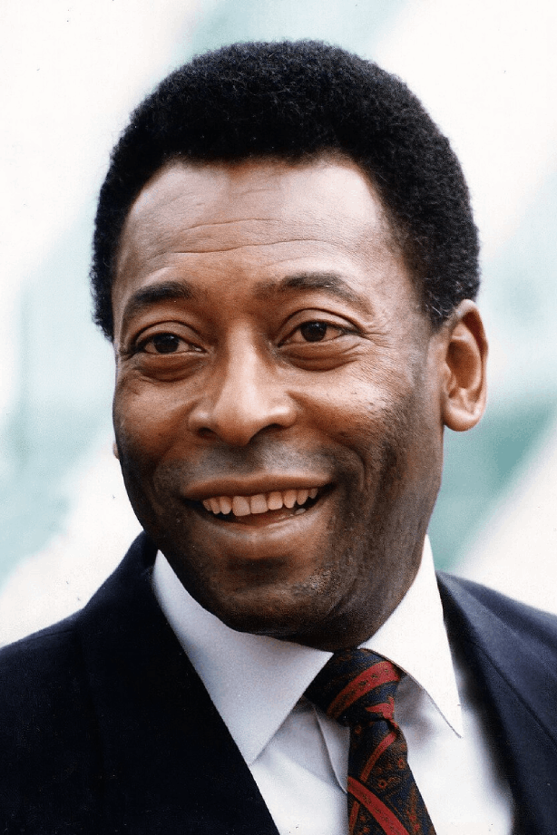

Famous Football Players

Cristiano Ronaldo
5x Ballon d'Or winner, UEFA Euro Champion 2016, Top scorer in UEFA Champions League history.

Lionel Messi
8x Ballon d'Or winner, 2022 FIFA World Cup Champion, All-time top scorer for Barcelona and Argentina.

Pele
Three-time FIFA World Cup Winner (1958, 1962, 1970), Brazil's national hero, widely regarded as one of the greatest footballers of all time.

Diego Maradona
1986 FIFA World Cup Winner with Argentina, famous for 'Hand of God' goal and mesmerizing dribbling skills, football legend.